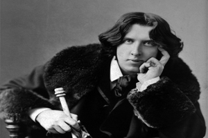

Oscar Wilde foi um renomado escritor, poeta e dramaturgo irlandês, conhecido por sua inteligência afiada, estilo extravagante e obras repletas de ironia e sarcasmo. Ele nasceu em 1854 e se destacou no cenário literário no final do século XIX, sendo considerado um dos principais nomes do movimento estético do Aestheticism. Sua escrita é marcada pelo uso sofisticado da linguagem, pelo humor perspicaz e por uma crítica mordaz à sociedade vitoriana.
Wilde ficou famoso por suas peças teatrais, como "O Leque de Lady Windermere" e "O Retrato de Dorian Gray", esta última considerada sua obra-prima. Em seus escritos, ele explorava temas como a natureza humana, a dualidade entre aparência e realidade, o papel da arte na sociedade e a hipocrisia da classe alta.
Além de suas peças teatrais, Wilde também escreveu contos e poemas, deixando um legado literário de grande importância. Sua personalidade excêntrica e suas declarações provocativas o tornaram uma figura controversa em seu tempo, mas sua genialidade literária continua a ser admirada até os dias de hoje.
Infelizmente, a vida de Oscar Wilde foi marcada por dificuldades e escândalos. Em 1895, ele foi condenado por "indecência grave" devido à sua homossexualidade, o que resultou em sua prisão e posterior exílio. Ele faleceu em 1900, deixando para trás um legado de obras literárias que são apreciadas por sua originalidade, perspicácia e profundidade.
A obra de Oscar Wilde continua a ser lida e estudada, sendo uma fonte inesgotável de citações icônicas e reflexões sobre a sociedade, a arte e a natureza humana. Sua contribuição para a literatura e sua irreverência em desafiar convenções tornam-no uma figura imortalizada na história da literatura.